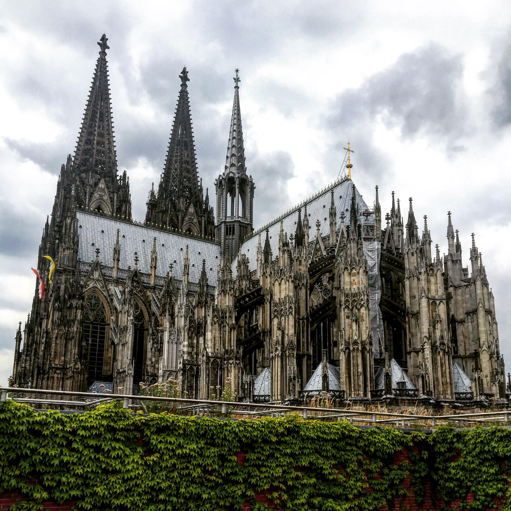

Travel Photography

I had the immense privilege of growing up traveling the world with my parents. Overtime I began to slowly capture the beauty around. These are some of my photographs that capture my perspective of the world.
This image is of my recent trip to Koln (Cologne), Germany. I attended a conference (discussed in the Current Work section), and enjoyed the many museums and restaurants throughout the city. It was only a single part of a longer trip throughout Europe. Below is a collection of my travel photographs in order of recency.